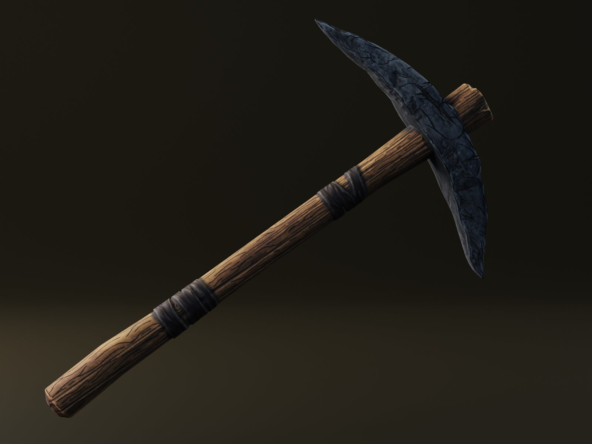
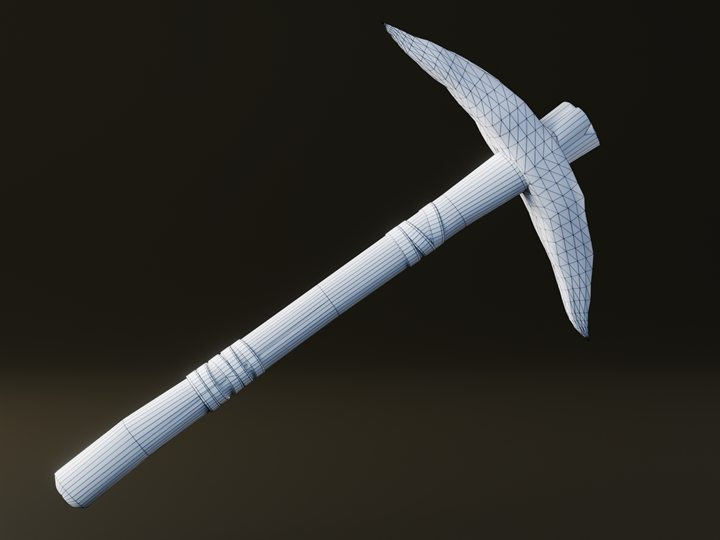

Stone Pickaxe: the first tool
The first finished asset, and the piece that set the rules for how every tool in the game will look.

A pickaxe is one of the first things a player holds in a survival game, so it made sense as the first asset to finish. It's also where I tested whether the line-stylized look would actually work on a real, game-ready prop before committing the rest of the world to it.
- Type
- Hand tool / starter equipment
- Tools
- Blender, ZBrush, Substance Painter, Marmoset Toolbag
- Focus
- Silhouette, wood grain direction, stone breakup
Breakdown



What I was going for
Readability first. The head and handle had to read clearly as a pickaxe at gameplay distance, so the shape is slightly exaggerated: a long, curved stone head and a chunky handle broken up by leather wraps.
On the texture side, I wanted the wood grain to follow the length of the handle and the stone to have broad, hand-painted breakup rather than noisy photo detail. The drawn lines on the grain and cracks are what pull it into the line-stylized look.
What it set up
This piece became the reference for everything after it: how heavy the line work should be, how much sculpted detail survives the bake, and how wood and stone are treated. The next asset, a storage box, was built directly on those rules.